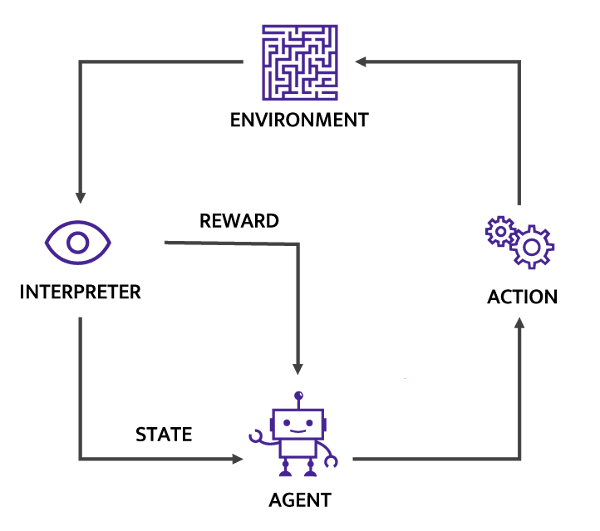

Day 1, Part B: More on Reward Design¶
Learning goals¶
Further examine the effects of reward function changes
Definitions¶
Simulation environment: Notice that this is not the same as the python/conda environment. The simulation environment is the simulated world where the reinforcement learning takes place. It provides opportunities for an agent to learn and explore, and ideally provides challenges that aid in efficient learning.
Agent (aka actor or policy): An entity in the simulation environment that performs actions. The agent could be a person, a robot, a car, a thermostat, etc.
State variable: An observed variable in the simulation environment. They can be coordinates of objects or entities, an amount of fuel in a tank, air temperature, wind speed, etc.
Action variable: An action that the agent can perform. Examples: step forward, increase velocity to 552.5 knots, push object left with force of 212.3 N, etc.
Reward: A value given to the agent for doing something considered to be ‘good’. Reward is commonly assigned at each time step and cumulated during a learning episode.
Episode: A learning event consisting of multiple steps in which the agent can explore. It starts with the unmodified environment and continues until the goal is achieved or something prevents further progress, such as a robot getting stuck in a hole. Multiple episodes are typically run in loops until the model is fully trained.
Model (aka policy or agent): An RL model is composed of the modeling architecture (e.g., neural network) and parameters or weights that define the unique behavior of the model.
Policy (aka model or agent): The parameters of a model that encode the best choices to make in an environment. The choices are not necessarily good ones until the model undergoes training. The policy (or model) is the “brain” of the agent.
Replay Buffer: A place in memory to store state, action, reward and other variables describing environmental state transitions. It is effectively the agent’s memory of past experiences.

Modify the CartPole Reward¶
We will work on reward modifications later in this course. For now, you can try modifying the reward here/ We’ve included MyCartPole.py in the Course_Material folder - a subclassed step function from the main environment definition. Because of the register step below, you’ll need to restart the kernel every time you modify the reward, so we’ve included the imports cell below for easy access.
To try different reward functions with the code below, your workflow should look like the following:
Modify the reward section (below line 40 in the .py), remember to save.
Restart your kernel and clear all outputs (probably don’t want to rerun all the training above).
Run the following 5 cells below to retrain and look at reward.
Feel free to play around with the total_timesteps=25000 if you want a shorter/longer test of your new reward
import os
import gym
from stable_baselines3 import PPO
from stable_baselines3.common.monitor import Monitor
from stable_baselines3.common.vec_env import DummyVecEnv, SubprocVecEnv
from stable_baselines3.common.env_util import make_vec_env
from stable_baselines3.common.utils import set_random_seed
from tqdm import trange
import hvplot.pandas # This adds HoloViews plotting capability directly from a Pandas dataframe
import pandas as pd
from gym.envs.registration import registry, make, spec
def register(id, *args, **kwargs):
if id in registry.env_specs:
return
else:
return gym.envs.registration.register(id, *args, **kwargs)
register(id='MyCartPole-v1',
entry_point='MyCartPole:MyCartPoleEnv',
max_episode_steps=1000,
reward_threshold=2500.0)
log_dir = "tmp/"
os.makedirs(log_dir, exist_ok=True)
env = gym.make("MyCartPole-v1")
env = Monitor(env, log_dir)
model = PPO('MlpPolicy', env, verbose=0)
model.learn(total_timesteps=25000)
training_reward = pd.DataFrame(pd.to_numeric(pd.read_csv("tmp/monitor.csv")[1:].reset_index()['index'])).reset_index()
training_reward.rename(columns={'level_0':"Episode",'index':"Reward"},inplace=True)
training_reward.hvplot(x="Episode",y="Reward")
reward_list = []
episode_reward = 0
obs = env.reset()
for _ in trange(1000):
action, _states = model.predict(obs)
obs, reward, done, info = env.step(action)
episode_reward += reward
env.render()
if done:
reward_list.append(episode_reward)
episode_reward = 0
env.reset()
env.env.viewer.close()
env.close()
Did your change in the reward function have the outcome you expected?